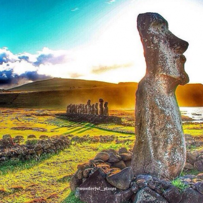

Situada en el océano Pacífico, en la Polinesia, esta isla chilena ha estado siempre envuelta en un halo de misterio por sus populares moáis. Estas enormes cabezas de piedra que erigen de la tierra pertenecen a la cultura ancestral de los rapanui, la etnia que habitaba la isla en sus orígenes. Su descubrimiento dio lugar en su día a numerosas hipótesis, actualmente sin resolver. Recientes trabajos arqueológicos en la isla de Pascua constataron que, bajo las cabezas y los torsos de los moáis estaban los cuerpos de cada uno de ellos, enterrados en la tierra. Se trata de la isla más grande de Chile y su capital, Hanga Roa, es la única población habitada de Pascua. Su nombre original Rapa Nui, que significa isla grande, le fue otorgado por los navegantes tahitianos que llegaron a ella en el siglo XIX. Con este nombre también se denominan a los aborígenes y a su idioma.
Existen dos teorías acerca de quienes fueron esos primeros navegantes intrépidos que encontraron la Isla de Pascua y decidieron instalarse en ella fundando una nueva civilización. Thor Heyerdahl, científico noruego que dedicó gran parte de su vida a estudiar los patrones migratorios polinesios y su posible vinculación con Sudamérica, sostuvo la idea de que fueron los nativos sudamericanos los que navegaron a través del Océano Pacífico y poblaron la Isla de Pascua. Para probar su teoría, en 1947 salió de la costa del Perú en una rudimentaria barca de madera –la Kon Tiki– y consiguió arribar a la Polinesia Francesa, siguiendo las corrientes marinas. Aunque su llegada fue bastante más arriba de la Isla de Pascua, sostuvo que saliendo de más al sur de América sería posible llegar a la Isla de Pascua. Esta teoría, bastante refutada desde sus inicios, ha sido negada más recientemente gracias a pruebas de ADN que muestran que los Rapanui tienen genes polinesios y no sudamericanos. La teoría de población más aceptada y avalada, a su vez, por la tradición oral, cuenta que el rey Hotu Matu’a llegó a la Isla de Pascua proveniente de la mítica isla Hiva, posiblemente en las Islas Marquesas, en algún momento entre los siglos VI y VIII d.C. Se cree que cuando Hotu Matu’a y sus hombres (alrededor de unos 100) desembarcaron en la playa de Anakena, llevando consigo lo necesario para formar una nueva civilización, y encontraron una isla cubierta de palmeras y plantas comestibles, donde también abundaban las aves marinas y los peces.
Los moais y las creencias religiosas
Como en toda la Polinesia, en la Isla de Pascua, el culto a los antepasados rigió gran parte de la vida espiritual de sus habitantes. Los Rapanui creían que el “mana” (energía espiritual) de las personas importantes continuaba existiendo después de su muerte, y tenía la capacidad para influir en los acontecimientos mucho tiempo después de su fallecimiento, creencia que se hizo tangible en la elaboración de los moais.
Esta es la conocida como etapa clásica, cuando la cultura Rapa Nui alcanzó su máximo esplendor erigiendo enormes altares ceremoniales o Ahu en los cuales se levantaron las enormes esculturas talladas en piedra volcánica, que son el símbolo más característico de la Isla de Pascua. El período de los moais se extendió aproximadamente entre el año 800 d.C. y 1860, cuando el conflicto entre los distintos linajes cambió la historia de la Isla.
Al momento de morir el jefe de una tribu o alguno de sus miembros más importantes, se mandaba esculpir una estatua en la cantera de Rano Raraku, misma que luego sería trasladada hasta la aldea correspondiente, para que proyecte sobre sus descendientes su “mana” o poder sobrenatural, a través de su mirada. Los moais siempre se colocaron mirando hacia su aldea y sus descendientes, no hacia el mar, ya que su objetivo no era protegerlos de amenazas externas sino extender sobre ellos un manto protector.
En la medida que los Rapanui adquirieron más habilidad esculpiendo y transportando los moais, éstos fueron haciéndose más grandes y más estilizados, a diferencia de los primeros que eran más pequeños y toscos; de este modo, el tamaño y la delicadeza de los detalles en la escultura sirven para establecer su antigüedad. De hecho, los moais más grandes que fueron esculpidos en este período, se encuentran todavía inconclusos en la cantera de Rano Raraku. Se calcula que las estatuas más grandes exigieron el trabajo de entre 10 y 20 hombres durante todo un año.
Se cree que entre los siglos XV y XVIII la Isla de Pascua sufrió una crisis de sobrepoblación que originó escasez de recursos y provocó conflictos entre las 12 tribus que la habitaban. La obsesión por construir moais cada vez más grandes fue una de las principales causas de deforestación y falta de alimentos. Estos problemas generaron el decaimiento en la creencia del poder de los moai y por tanto su elaboración no sólo fue abandonada sino que llegaron incluso a derribarlos de sus ahus.